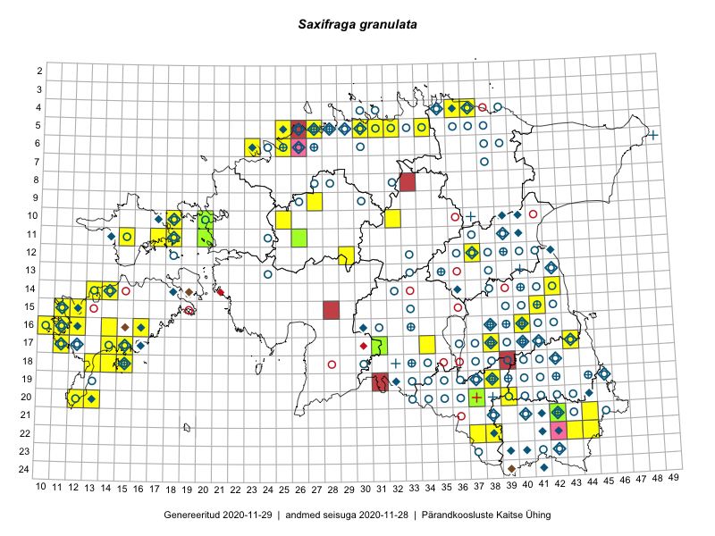

Saxifraga granulata
Uuendatud: 2016-12-08
Kaardile koondatud taksonid: Saxifraga granulata L.

Kaart põhineb 49 kirjel, neist vaatlusi 48 ja eksemplare 1. Taksonit on leitud 35 ruudust.
| Ruut | Vaatleja(d) | Vaatlusaeg | Kirje tüüp | Viide andmebaasikirjele |
|---|---|---|---|---|
| 12-29 | Tiit Hallikma, Indrek Tammekänd, Toomas Kukk | 2015-06-09 | punkt | vaata PlutoFis |
| 14-42 | Peedu Saar, Ott Luuk | 2015-06-21 | ruut/ala | vaata PlutoFis |
| 05-30 | Rein Kalamees, Kersti Püssa | 2015-05-27 | ruut/ala | vaata PlutoFis |
| 16-12 | Toomas Kukk, Mari Reitalu | 2014-06-20 | ruut/ala | vaata PlutoFis |
| 16-12 | Toomas Kukk, Mari Reitalu | 2014-06-20 | punkt | vaata PlutoFis |
| 04-37 | Rein Kalamees, Kersti Püssa | 2015-05-31 | ruut/ala | vaata PlutoFis |
| 18-15 | Ott Luuk, Elle Roosaluste, Jaak-Albert Metsoja | 2015-06-16 | ruut/ala | vaata PlutoFis |
| 17-31 | Ott Luuk, Hannes Pehlak | 2015-06-11 | ruut/ala | vaata PlutoFis |
| 15-41 | Thea Kull | 2015-06-21 | ruut/ala | vaata PlutoFis |
| 14-42 | Ott Luuk, Peedu Saar | 2015-06-21 | punkt | vaata PlutoFis |
| 16-11 | Mari Reitalu | 2015-05-22 | ruut/ala | vaata PlutoFis |
| 15-11 | Mari Reitalu, Triin Reitalu | 2015-04-25 | ruut/ala | vaata PlutoFis |
| 15-12 | Mari Reitalu, Triin Reitalu | 2015-05-24 | ruut/ala | vaata PlutoFis |
| 17-14 | Mari Reitalu, Sirje Azarov | 2015-05-09 | ruut/ala | vaata PlutoFis |
| 20-13 | Mari Reitalu, Oliver Parrest | 2015-05-26 | ruut/ala | vaata PlutoFis |
| 16-12 | Mari Reitalu | 2015-07-27 | ruut/ala | vaata PlutoFis |
| 16-12 | Mari Reitalu | 2015-06-10 | ruut/ala | vaata PlutoFis |
| 17-34 | Maria Abakumova, Helle Mäemets | 2015-05-27 | ruut/ala | vaata PlutoFis |
| 14-13 | Mari Reitalu, Oliver Parrest | 2015-05-14 | ruut/ala | vaata PlutoFis |
| 18-14 | Oliver Parrest | 2015-05-23 | ruut/ala | vaata PlutoFis |
| 18-15 | Oliver Parrest | 2015-05-23 | ruut/ala | vaata PlutoFis |
| 20-12 | Triin Reitalu, Sirje Azarov | 2015-05-30 | ruut/ala | vaata PlutoFis |
| 18-13 | Mari Reitalu, Oliver Parrest | 2015-05-27 | ruut/ala | vaata PlutoFis |
| 16-11 | Mari Reitalu, Triin Reitalu | 2015-05-28 | ruut/ala | vaata PlutoFis |
| 15-12 | Mari Reitalu, Triin Reitalu | 2015-04-25 | ruut/ala | vaata PlutoFis |
| 16-10 | Sirje Azarov, Mari Reitalu | 2015-05-22 | ruut/ala | vaata PlutoFis |
| 17-11 | Mari Reitalu, Triin Reitalu | 2015-05-19 | ruut/ala | vaata PlutoFis |
| 16-11 | Sirje Azarov, Mari Reitalu | 2015-05-23 | ruut/ala | vaata PlutoFis |
| 16-12 | Mari Reitalu, Triin Reitalu | 2015-04-30 | ruut/ala | vaata PlutoFis |
| 10-25 | Aat Sarv | 2015-07-21 | ruut/ala | vaata PlutoFis |
| 11-18 | Meeli Mesipuu | 2015-05-15 | ruut/ala | vaata PlutoFis |
| 20-37 | Kaili Kattai | 2015-05-26 | ruut/ala | vaata PlutoFis |
| 11-18 | Meeli Mesipuu, Timo Luhamäe | 2015-05-26 | ruut/ala | vaata PlutoFis |
| 05-25 | Mari Metsoja, Jaak-Albert Metsoja | 2015-05-30 | ruut/ala | vaata PlutoFis |
| 06-23 | Mari Metsoja, Jaak-Albert Metsoja, Ott Luuk | 2015-06-04 | ruut/ala | vaata PlutoFis |
| 06-23 | Jaak-Albert Metsoja, Mari Metsoja, Ott Luuk | 2015-06-05 | ruut/ala | vaata PlutoFis |
| 11-18 | Meeli Mesipuu, Timo Luhamäe | 2016-05-28 | punkt | vaata PlutoFis |
| 22-37 | Kaili Kattai | 2015-05-31 | ruut/ala | vaata PlutoFis |
| 11-26 | Thea Kull, Meeli Mesipuu, Eerik Leibak | 2014-06-11 | ruut/ala | vaata PlutoFis |
| 09-27 | Aat Sarv | 2015-05-15 | ruut/ala | vaata PlutoFis |
| 14-14 | Meeli Mesipuu | 2016-05-05 | punkt | vaata PlutoFis |
| 10-18 | Uku Paal | 2016-05-19 | ruut/ala | vaata PlutoFis |
| 15-12 | Meeli Mesipuu, Tiiu Kull | 2016-05-27 | punkt | vaata PlutoFis |
| 22-43 | Toomas Kukk, Tiit Hallikma, Johannes Kõdar | 2016-06-15 | ruut/ala | vaata PlutoFis |
| 16-16 | Meeli Mesipuu | 2016-09-24 | ruut/ala | vaata PlutoFis |
| 17-15 | Mari Reitalu, Sirje Azarov | 2016-05-19 | ruut/ala | vaata PlutoFis |
| 11-18 | Timo Luhamäe, Meeli Mesipuu | 2015-05-26 | punkt | vaata PlutoFis |
| 22-44 | Jaak-Albert Metsoja, Mari Metsoja | 2016-06-15 | ruut/ala | vaata PlutoFis |
| 10-20 | Ott Luuk | 2014-05-24 | eksemplar | vaata PlutoFis |